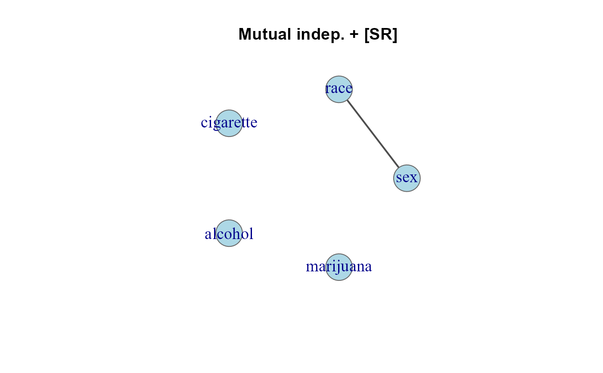
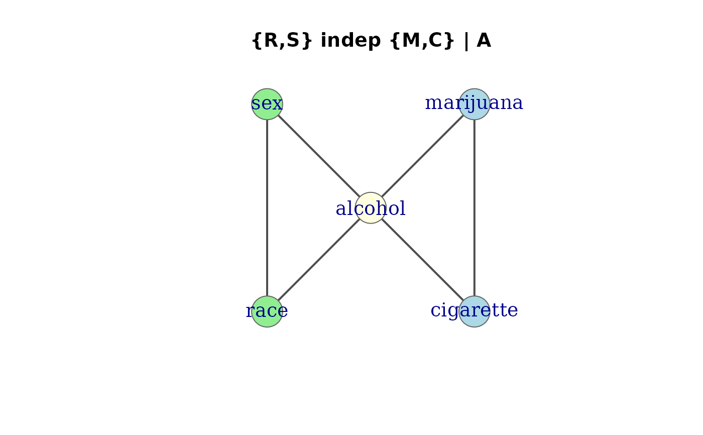

Construct an undirected graph representing the associations in a loglinear model. Nodes represent variables and edges represent pairwise associations fitted in the model. If two variables are not connected by an edge, they are conditionally independent given the other variables.
Usage
assoc_graph(x, ...)
# S3 method for class 'list'
assoc_graph(x, result = c("igraph", "matrix", "edge_list"), ...)
# S3 method for class 'loglm'
assoc_graph(x, result = c("igraph", "matrix", "edge_list"), ...)
# S3 method for class 'glm'
assoc_graph(x, result = c("igraph", "matrix", "edge_list"), ...)
# S3 method for class 'assoc_graph'
print(x, ...)Arguments
- x
An object specifying the model. Can be:
A
listof character vectors (a margin/generating class list, as produced byjoint,conditional, etc.)A fitted
loglmobjectA fitted
glmobject (poisson family loglinear model)
- ...
Additional arguments (currently unused).
- result
Type of result to return:
"igraph"(default) returns anigraphobject;"matrix"returns the adjacency matrix;"edge_list"returns a two-column character matrix of edges.
Value
Depending on result:
"igraph": Anigraphundirected graph object of classc("assoc_graph", "igraph"), with vertex names corresponding to the variable names."matrix": A symmetric adjacency matrix (0/1) with variable names as row and column names."edge_list": A two-column character matrix, each row an edge.
Details
Each high-order term (margin) in a hierarchical loglinear model defines a clique
in the association graph. For example, the term c("A", "B", "C") generates
edges A–B, A–C, and B–C. Single-variable terms (as in mutual independence)
yield isolated nodes with no edges.
For loglm objects, the margins are extracted from the $margin component.
For glm objects, the interaction terms are extracted from the model formula.
References
Khamis, H. J. (2011). The Association Graph and the Multigraph for Loglinear Models. SAGE Publications. doi:10.4135/9781452226521
Darroch, J. N., Lauritzen, S. L., & Speed, T. P. (1980). Markov Fields and Log-Linear Interaction Models for Contingency Tables. The Annals of Statistics, 8(3), 522–539. doi:10.1214/aos/1176345006
Whittaker, J. (1990). Graphical Models in Applied Multivariate Statistics. John Wiley & Sons, Chichester.
See also
joint, conditional, mutual,
saturated, loglin2string, seq_loglm,
plot.assoc_graph
Other loglinear models:
get_model(),
glmlist(),
joint(),
plot.assoc_graph(),
seq_loglm()
Examples
# Structural graphs from margin lists (3-way: A, B, C)
mutual(3, factors = c("A", "B", "C")) |> assoc_graph()
#> Association graph: 3 variables, 0 edges
#> Variables: A, B, C
#> Edges: (none -- mutual independence)
#> Model: [A] [B] [C]
joint(3, factors = c("A", "B", "C")) |> assoc_graph()
#> Association graph: 3 variables, 1 edges
#> Variables: A, B, C
#> Edges: A -- B
#> Model: [C] [A,B]
conditional(3, factors = c("A", "B", "C")) |> assoc_graph()
#> Association graph: 3 variables, 2 edges
#> Variables: A, C, B
#> Edges: A -- C, C -- B
#> Model: [A,C] [C,B]
saturated(3, factors = c("A", "B", "C")) |> assoc_graph()
#> Association graph: 3 variables, 3 edges
#> Variables: A, B, C
#> Edges: A -- B, A -- C, B -- C
#> Model: [A,B,C]
# Adjacency matrix form
conditional(3, factors = c("A", "B", "C")) |> assoc_graph(result = "matrix")
#> A C B
#> A 0 1 0
#> C 1 0 1
#> B 0 1 0
# From a fitted loglm model (Berkeley admissions)
if (FALSE) { # \dontrun{
mod <- MASS::loglm(~ (Admit + Gender) * Dept, data = UCBAdmissions)
assoc_graph(mod)
plot(assoc_graph(mod), main = "Berkeley: [AD] [GD]")
} # }
# From glm models (Dayton Survey: cigarette, alcohol, marijuana, sex, race)
data(DaytonSurvey)
# Mutual independence + sex*race: one edge only
mod.SR <- glm(Freq ~ . + sex*race, data = DaytonSurvey, family = poisson)
assoc_graph(mod.SR)
#> Association graph: 5 variables, 1 edges
#> Variables: sex, race, cigarette, alcohol, marijuana
#> Edges: sex -- race
#> Model: [cigarette] [alcohol] [marijuana] [sex,race]
plot(assoc_graph(mod.SR), main = "Mutual indep. + [SR]")

# [AM][AC][MC][AR][AS][RS]: {race, sex} indep {marijuana, cigs} | alcohol
mod.cond <- glm(Freq ~ (cigarette + alcohol + marijuana)^2 +
(alcohol + sex + race)^2,
data = DaytonSurvey, family = poisson)
assoc_graph(mod.cond)
#> Association graph: 5 variables, 6 edges
#> Variables: cigarette, alcohol, marijuana, sex, race
#> Edges: cigarette -- alcohol, cigarette -- marijuana, alcohol -- marijuana, alcohol -- sex, alcohol -- race, sex -- race
#> Model: [cigarette,alcohol,marijuana] [alcohol,sex,race]
plot(assoc_graph(mod.cond),
groups = list(c("cigarette", "marijuana"),
"alcohol",
c("sex", "race")),
main = "{Mar,Cig} indep of {Race,Sex} | Alc",
layout = igraph::layout_nicely)
